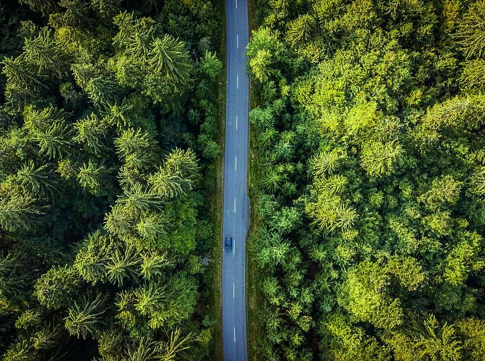

secret Jharkhand
|
Kerala is teeming with events and festivals round the year so be sure to keep track of what happens when and where so as to be able to enjoy your trip to the fullest. From Cultural fairs like the Kochi Muziris Biennale to the legendary boat races of Kerala and other ritualistic festivals and celebrations, the list is endless. |
PATRATU VALLEY |
| > |
Maria AndersKerala is teeming with events and festivals round the year so be sure to keep track of what happens when and where so as to be able to enjoy your trip to the fullest. From Cultural fairs like the Kochi Muziris Biennale to the legendary boat races of Kerala and other ritualistic festivals and celebrations, the list is endless. |
GETALSUD DAM |
 |
Christina BerglundKerala is teeming with events and festivals round the year so be sure to keep track of what happens when and where so as to be able to enjoy your trip to the fullest. From Cultural fairs like the Kochi Muziris Biennale to the legendary boat races of Kerala and other ritualistic festivals and celebrations, the list is endless. |
PERWAGAGH |
|
Perwaghag: One of the most beautiful waterfalls in Jharkhand, hidden in the lush forests near Torpa block. In the rainy season, it is inaccessible. But, in winter around Christmas and New Year, it is one of the most popular picnic spots to enjoy.
This is the most beautiful falls in Jharkhand. It is located in Torpa & about 85 km from Ranchi. Torpa is Khunti District and you can reach there in half an hour from Ranchi.
|